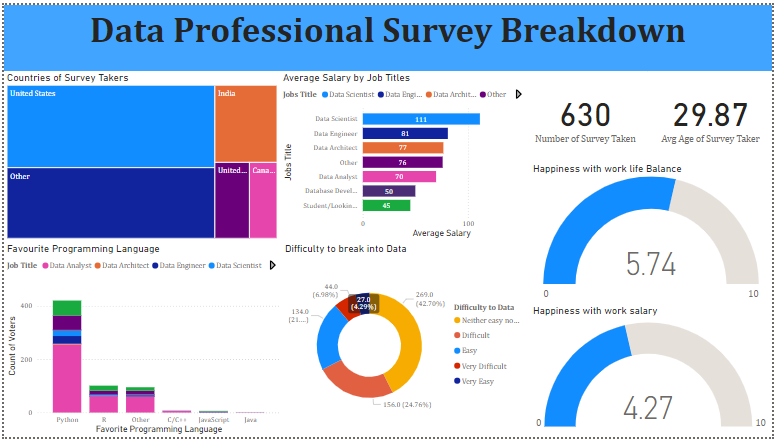
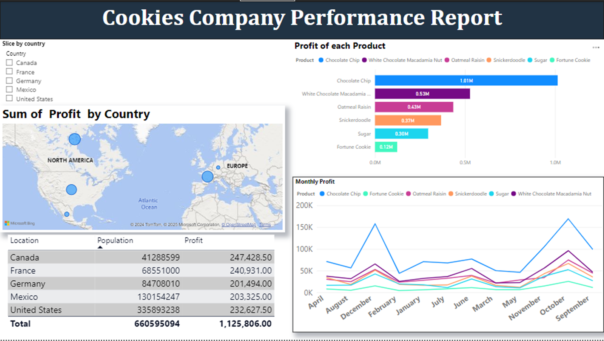
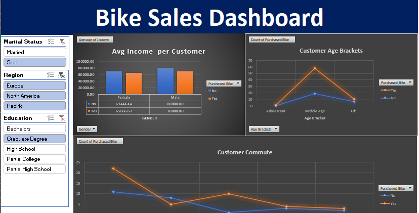

I am Boladale Sulaiman (Baas), a dedicated Data Analyst, Business Intelligence Specialist, and Web Developer passionate about transforming data into powerful insights and creating solutions that drive success. My mission is to help businesses and organizations unlock their full potential by leveraging the power of data and technology
With a strong foundation in data analysis.
With a strong foundation in data analysis, I specialize in uncovering trends, optimizing processes, and delivering actionable insights that enable smarter decision-making. My expertise in business intelligence allows me to craft innovative dashboards and reporting tools that provide clarity and foster strategic growth.
Here are a few technologies I've been working with recently:
Data Managements
- MySql
- Python
- Excel
- PowerBi
- Tableau
Web Development
- HTML5 & CSS3
- JavaScript
- ReactJs
- NextJs
- TypeScript
- Git
- Mysql
Recent Work

Professional Data Survey Breakdown
PowerBi
In this project, I used Power BI to analyze a professional data survey. The process included cleaning the survey data, exploring and analyzing key trends, transforming the data into meaningful insights, and designing interactive dashboards and reports that provide clear, actionable visuals for decision-making.

Cookie Company Performance Report
PowerBi
In this project, I used PowerBI to create a comprehensive performance report for a cookie company. The process involved cleaning and analyzing sales data, scraping web data for country populations, transforming data into actionable insights, and designing interactive dashboards and reports to deliver clear, data-driven insights for decision-making.

COVID 19 Data Exploration
SQL
In this project, I used SQL to clean and optimize datasets by removing duplicates, standardizing data formats, handling null or blank values, and eliminating unnecessary columns for improved analysis and efficiency.
Finance Company Data Exploration/Analizing
SQL
Used SQL to clean and analyze finance company data, explore key trends, and create procedures and functions to streamline access and scripting for co-workers, enhance.

Bike Sales Analysis
Excel
In this project, I used Excel to perform a comprehensive Bike Sales Analysis. The first step involved cleaning the data to ensure its accuracy and consistency. I then explored and analyzed the data to identify key trends and patterns that could inform business decisions. Afterward, I transformed the data into powerful insights, making it actionable for strategic planning. Finally, I crafted innovative dashboards and reporting tools to visualize the findings, providing clear and concise insights for stakeholders to make informed decisions.
Get In Touch
Let’s collaborate and turn ideas into impactful solutions! Whether you’re looking for data-driven insights, innovative dashboards, web development expertise, or business intelligence strategies, I’m here to help. Feel free to reach out—I’d love to hear about your project and explore how we can work together to achieve your goals.

{kind=link}
{kind=link}
{kind=link}